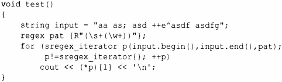

⇐9.4.2 Запись регулярных выражений 9.5 Советы⇒
Мы можем определить regex_iterator для итерирования последовательности символов, обнаруживающих совпадение с шаблоном. Например, можно использовать sregex_iterator (regex iterator<string>) для вывода всех разделенных пробельными символами слов в строке string:
Это дает нам следующий вывод:
Первое слово - аа - пропущено, так как ему не предшествуют пробельные символы. Если упростить шаблон до R"((\ w+))", то получится
Итератор regex_iterator является двунаправленным итератором, так что мы не можем непосредственно итерировать входной поток istream (который предоставляет только входной итератор). Мы также не можем записывать с помощью regex_iterator, а regex_iterator по умолчанию (regex_iterator{}) является единственно возможным концом последовательности.